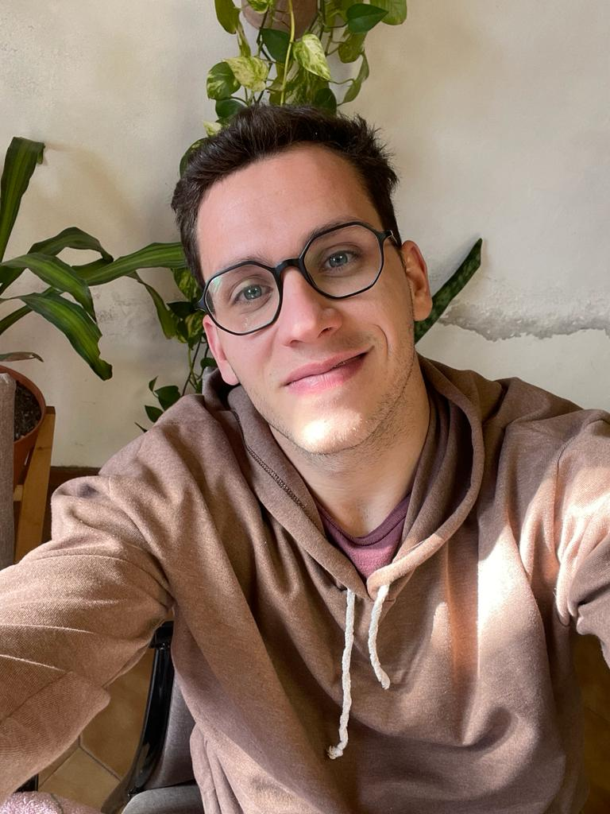

Este soy yo,haciendo una impresion de mi mismo
TOMÁS BERTI
Buenas,
Soy Tomás, desarrollador web freelance, me dedico a crear
proyectos web, buscando marcar diferencia en internet
+ SOBRE MI ..
- Nací en 1997.
- Mellizo de una tatuadora.
- Soy de Boca Juniors.
- Disfruto el tiempo solucion.
- Soy proactivo.
- Me gusta viajar y mucho.